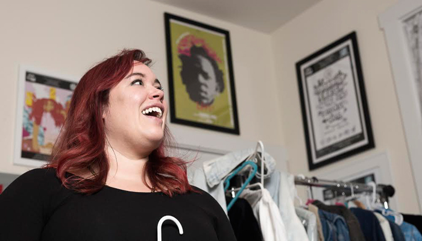

REVIEW: TAYLOR BENNETT HOLIDAY BASH @ METRO CHICAGO
Chicago emcee, Taylor Bennett, hosted his sold out Holiday Bash at the Metro the Friday before Christmas, featuring performances from Supa Bwe, Sus Life, Elz the DJ, Morocco Brown, and Evie the Cool.
SONG: CALID B "UMOJA"
Calid B just released an afrobanger just in time for Kwanzaa. The song, "UMOJA" is a tribute to the first day of Kwanzaa, which strives to maintain unity in the family, community, nation, and race. This song does just that, with it's catchy hook, and signature Calid B cadence, and he says. "we've got something in common," and its great drums and interlaced with beats, and "afro-hyphy" vibes, which were also produced by him.
IN MUSIC: ALBUM GALLOWS BY DRAMA
DRAMA, a dark and passionate musical house collaboration featuring Via Rosa and Na’el Yusef Shehade from Chicago dropped an amazing 8 track EP titled Gallows last month and are set to have their release party this Thursday at Chop Shop. With Rosa's rustic, soulful, and bluesy vibe and Shehade's fine production togethery they combine an ethereal twist to house music.
IN ARTS: Q&A WITH ADELE SUPREME
As a child you are told to let your imagination run wild, sometimes for an artist that never stops. LA born and raised, and now Portland based artist, Adele Supreme, has a pretty wicked imagination. Nasty in fact. But nasty in the best way possible. Her art illustrates the mind of a woman of tapping into her power and prowess. Her work is carnal and raw, yet whimsical in execution with her black stream of conscious linework
IN MUSIC: AMFM PLAYLIST: HIBERNATION STATION
"A hibernation is a covert preparation for a more overt action.” Check out our winter playlist of songs we've got on repeat for these trying times and the self reflective state of winter. Whether you're re-charging your batteries, slowing down, or cold AF, we hope this playlist helps get you through the changing seasons whether you're weathered from life or from the temperature.

IN MUSIC ALBUM "FREEDOM PAPERS" BY FREDDIE OLD SOUL
Chime in with us as we bump soulful psychedelic tunes. Fredrianna Harris most commonly know in the streets of Chicago as Freddie Old Soul recently released Freedom Papers, tittled after documents that proved the free status of enslaved peoples and served as a legal affidavit during the 18th and 19th centuries. The EP is an ode to the Black community, to the Shea Butter sisters, Crystal wearers, the kings and queens, and the ones searching for their Freedom Papers.

IN FASHION: Q&A WITH EMMA MCKEE
There are no mistakes in life, the same goes for embroidery. Emma Mckee, better known as The Stitch Gawd, knows this all too well, so it’s no mistake that she found herself in immersed in Chicago’s Hip-Hop scene far from her hometown in Tulsa, Oklahoma after her stint in Canada had come to an abrupt ending. It’s also no mistake that she found solace in the music scene and found herself rubbing elbows and thus embroidering the backs for some of Chicago’s finest artists like Chance The Rapper.
IN MUSIC: ALBUM "BABY" BY CALEZ
Since before our last Jazz Series, we've been jamming out to Calez's newest musical creation, Baby which is ironically dedicated to his latest creation, his soon to come baby girl. The album has a very jazz-like foundation, and is wrapped up in excellent production, which he does most of himself. The depth and lyrical storytelling is a great gift, not only to his unborn child, but to fans alike, and surely himself.
IN MUSIC: NEW MUSIC FROM SMARTMOUF'S ACE DA VINCI "IMAGODEI" AND L11'S "ORGANIC HEMP"
Smart Mouf is an art collective based in Chicago, IL featuring seven members that practice dance, rhythm, blues, soul, hip hop, and instrumentation, and the King and Queen, Ace Da Vinci, and L11 have been busy this month. Both have new song releases, and we even have a music video to share featuring other SmartMouf fam off of Da Vinci's popular song that errbody fux with, "ImagoDei."
PHOTO ALBUM: THE JAZZ SERIES "EDO & OLIVIER"
Check out photos from our Jazz Series at the Chicago Art Department featuring visual artists Edo & Olivier, who we did a Q&A with as well, which you can check out in our arts section! Featured musicians were Yomi, Melo Makes Music, Pugs Atomz, and the Highness Collective.
IN MUSIC: SHOW YOU SUCK X THE HOOD INTERNET PRESENT AIRCREDITS "BROADCASTED"
Chicago's Show You Suck and The Hood Internet solo musically are good in their own respects, so it's only imaginable what greatness resulted from them teaming up to create Air Credits "Broadcasted." We had the chance to check out the listening party set to fog and a fantastic installation light show to elevate the experience. The album has an 80s', futuristic, video game feel streamlined with hard hitting hip hop beats, horns, and excellent production.
IN MUSIC: WEBSTER X "BLUE STREAK"
Big ups to our Milwaukee brother Webster X! We've been following the evolution of X since his early beginnings and what a journey it's been! Yesterday he made the big announcement that he has now joined with Chicago label, Closed Sessions, alongside some of our other favorites, Jamila Woods, Kweku Collins and Odd Couple. This is big news for Webster X, and will surely take him to new musical heights.
IN ARTS : DELISHA RENEE MCKINNEY
Delisha Renee McKinney makes whimsical illustrations that are larger than life, full of vibrant colors, textures and hidden meanings. Each piece represents another page in the story she's been working on her whole life. Her otherworldly characters represent the thin line between fantasy and reality, a whole new world sketched by McKinney, who is a self taught painter and self proclaimed nomad from the South, now practicing in Chicago.
THE JAZZ SERIES PLAYLIST: BLACK GIRL MAGIC
Our October Jazz Series is upon us, and we thought we would serve you up a treat of black girl magic on a platter. This Jazz Series features some of the best emerging black songstresses and emcees. Check out a medley of music from Tasha, Kiara Lanier, Broadway Muse and Aycee Lovely before you check them out this Friday at The Jazz Series, and if you can't make it, jam along with us!
IN MUSIC: KWEKU COLLINS
Just a couple of years ago Kweku Collins was a kid in history class in Evanston, Ilinois, learning about the black war hero Nat Love, now he is signed to Closed Sessions, and traveling the globe to promote his latest project, Nat Love, inspired by that very class. Doing what you love for a living fresh out of high school is a dream to many.
IN MUSIC: HOMESICK BY DARYN ALEXUS
We've all felt a little homesick before, but nothing hits the nail on the head quite like Daryn Alexus' new song "Homesick." From anecdotes about food, missing her mother, to places she would like to go, the song is a walk through her own personal memory bank.
IN FASHION : IVORY KUTTS
Eyes, hearts, souls and inner fashionistas will be stricken by Imani Kutti’s recent fashion line, Ivory Kutts, inspired by her Nigerian roots and the urban city chic of Chicago. It’s the combination of uniquely crafted pieces inspired by Kente patterns and the beautifully melanated models that gives Ivory Kutts it’s oomph.
IN MUSIC: EMMITT JAMES "FUCKS WITCHU" FEAT. FIVY
We fucks with LA golden boy, Emmitt James. And we hope you do too. James, originally from Milwaukee, took his dreams to the coast and has been making waves. With his jazz and hip-hop inspired beats and his cadence and delivery, you can sense his poetry background, smooth like the sound.